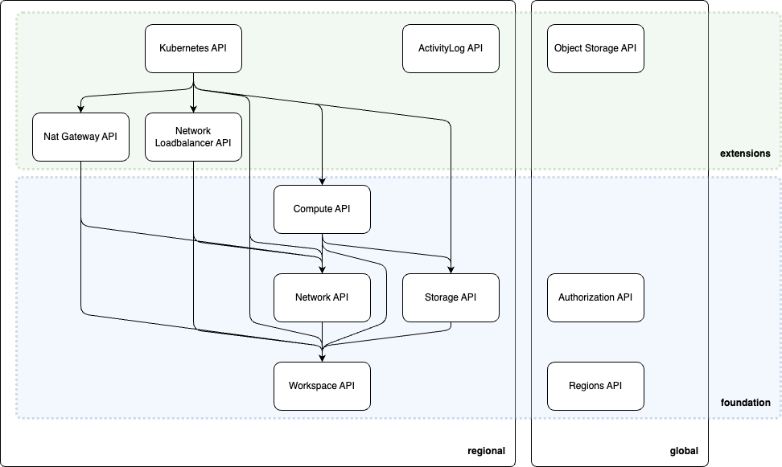

Overview
Mission
Unite top European providers to create a European cloud standard attracting the public sector.
Key advantages
- sovereignty, e.g. immunity from foreign government interference keeping API control with founding members
- common standards reduces costs, e.g. less training, common tooling, faster adoption, …
- broad provider support will incentivize ISVs to build profitable tools and software ecosystems
- built-in alignment with EU regulations for resilience, data protection and privacy
- long-term support of APIs provide reliability and maintainability
- comparison of compliant providers and increased resources using multiple providers
- directly address the demand of the public sector to have no vendor lock-in
Open Development Model
The SECA API is designed with extensibility in mind, allowing for the seamless integration of new products and features as they emerge. To facilitate this, the API framework is open to proposals from any member of the SECA community. Members can submit suggestions for new features, enhancements, or extensions to the API council, which will review and evaluate them based on the established API guidelines. This collaborative approach ensures that the SECA API remains adaptable, innovative, and aligned with the evolving needs of its users, while maintaining the integrity and consistency of the API framework.
High Level architecture

The SECA API is designed with a clear separation of concerns, dividing its architecture into two distinct planes: the Control-Plane and the Data-Plane. This design allows for flexibility in implementation, supporting both regional and fully-global API deployment strategies.
The Control-Plane serves as the management interface, handling resource creation, configuration, and provisioning. In contrast, the Data-Plane provides customers with access to their provisioned resources, enabling them to utilize the allocated services.
A key principle of the SECA API is its adaptability, allowing implementers to deploy it regionally or globally, depending on their specific requirements. To achieve this, resources are separated by provider, with provider-specific APIs defined to operate at either a regional or global scope.
By building upon existing Cloud Service Provider APIs, the SECA API facilitates a seamless integration with established cloud infrastructure, enabling a more efficient and streamlined deployment process.
Foundation Compliance

To achieve foundation compliance, a Cloud Service Provider (CSP) must implement the necessary providers to establish a foundational Infrastructure-as-a-Service (IaaS) layer. This involves deploying a comprehensive set of providers that enable the creation and management of essential resources.
New CSPs can ideally achieve foundation compliance within a short timeframe by implementing the required providers from scratch. Alternatively, existing CSPs with pre-existing APIs can leverage these to expedite the compliance process. In such cases, a simple API proxy or translator can be employed to map the control plane resources, enabling seamless integration with the SECA API framework. This approach minimizes the need for extensive re-architecture, allowing CSPs to rapidly adapt to the SECA standard.
Principles
- We organize and manage cloud resources through a structured, resource-based approach
- Every resource within the platform is classified according to
- service level: refers to the degree of management and abstraction provided by the cloud platform.
It is classified into primary models such as:
- Infrastructure as a Service (IaaS)
- Platform as a Service(PaaS)
- Software as a Service(SaaS)
- location: defines the geographical availability of a resource, affecting performance, redundancy, and accessibility.
- global: resources that are accessible across multiple regions and do not depend on a single geographical location (e.g., IAM, DNS)
- regional: resources that span multiple availability zones within a specific region (e.g., regional load balancers, replicated storage)
- zonal: resources that are confined to a single availability zone within a region (e.g., virtual machines, disks)
- scope: defines the hierarchical structure and boundaries within which a resource exists and can be managed. It determines how a resource is grouped and referenced within the cloud platform.
Resources are classified as:
- tenant-scoped: resource that spans across multiple workspaces within an a tenant (e.g., Skus).
- workspace-scoped: resource confined to a single and logical set of resources (e.g., a VM in a cloud workspace).
- service level: refers to the degree of management and abstraction provided by the cloud platform.
It is classified into primary models such as:
Further details about each resource modeled is described in the Glossary